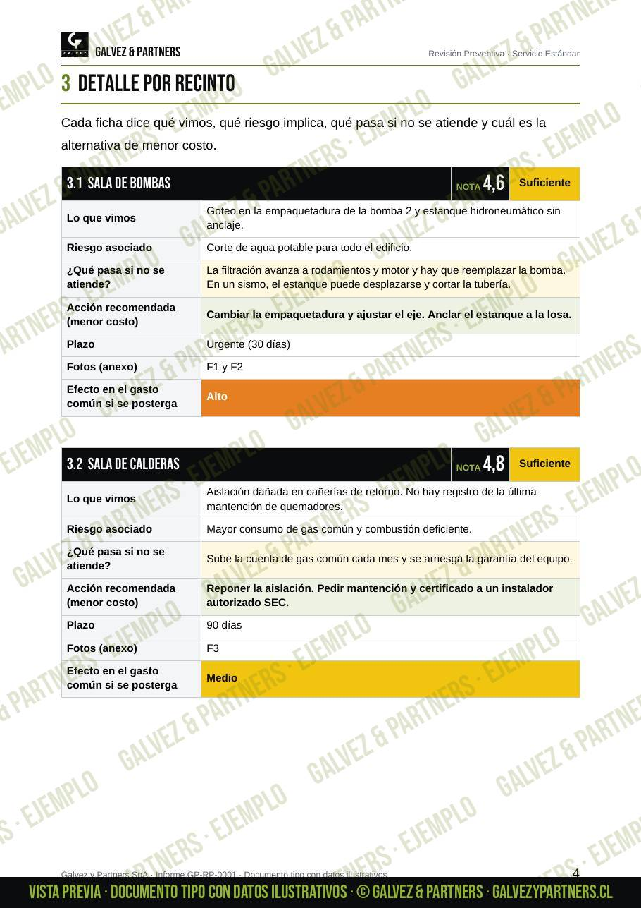

Inicio · Revisiones preventivas
Para administraciones y comités
Revisión preventiva de edificios
Para administraciones y comités: un informe independiente con el estado de los recintos técnicos y espacios comunes.
Una falla detectada a tiempo cuesta mucho menos que una reparación de emergencia. Revisamos salas de bombas, calderas y eléctricas, estanques de agua, presurización, cierres, portones y espacios comunes.
Entregamos el informe a la administración, con nota por recinto, fotos, riesgos, prioridades y, para cada hallazgo, la alternativa de menor costo. La administración decide cómo seguir; nosotros recomendamos.
Hay tres niveles: Estándar (hasta 5 recintos técnicos a elección), Integral (todos los recintos y espacios comunes, con proyección OPEX y CAPEX) y Premium (además revisión documental, garantías y hasta 2 visitas de seguimiento de correcciones).
- Salas de bombas y calderas
- Salas eléctricas y estanques de agua
- Presurización de escaleras
- Cierres, portones y controles de acceso
- Fallas posiblemente en garantía
- Informe para el comité y la asamblea



Preguntas frecuentes
Lo que más nos preguntan
¿Qué diferencia hay entre mantención y revisión?
La mantención la hace cada proveedor en su equipo. La revisión es una mirada independiente al edificio completo, que le dice al comité cómo está y si las mantenciones están funcionando.
¿El informe certifica las instalaciones?
No. Es una inspección visual y de funcionamiento con un informe de observaciones. Para gas y electricidad recomendamos un instalador autorizado SEC.
¿Quién recibe el informe?
La administración que nos contrata. Recomendamos a quién acudir en cada tema y la administración decide si lo deriva a sus mantenedores.
¿Estamos obligados a contratar las reparaciones con ustedes?
No. El informe es independiente: la comunidad decide con quién reparar.
¿Cómo se cotiza?
Según el nivel, la cantidad de recintos y el tamaño de la comunidad. Escríbenos y coordinamos una visita de diagnóstico.
Contacto
Conversemos tu proyecto
Atendemos en Santiago y la Región Metropolitana. Escríbenos y te respondemos a la brevedad.
Otros servicios